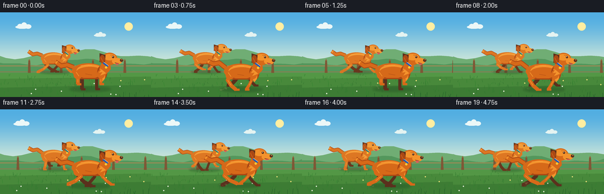
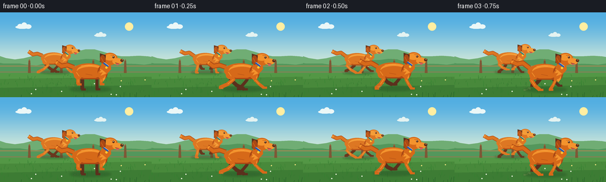

CODING AGENTS AS PIXEL WORLD MODELS
traex/GPT-5.6-Sol · instance_preservation_0001
点击播放 · 原生 RGB 像素
逐轮保存的候选
回放视频、检查图与代码变化。
每份候选均可单独播放。实际图片检查记录在下方工具轨迹中。
候选 01播放与检查图
点击播放 · 原生 RGB 像素

展开代码变化
--- 上一保存版本
+++ 本次保存版本
@@ -0,0 +1,265 @@
+from pathlib import Path
+import math
+import numpy as np
+from PIL import Image, ImageDraw, ImageFilter
+import artifact_io
+
+W, H, N = 256, 144, 20
+SS = 4
+
+def q(v):
+ return int(round(v * SS))
+
+def xybox(box):
+ return tuple(q(v) for v in box)
+
+def ellipse(d, box, fill, outline=None, width=1):
+ d.ellipse(xybox(box), fill=fill, outline=outline, width=q(width) if outline else 1)
+
+def polygon(d, pts, fill):
+ d.polygon([(q(x), q(y)) for x,y in pts], fill=fill)
+
+def line(d, pts, fill, width, joint='curve'):
+ d.line([(q(x), q(y)) for x,y in pts], fill=fill, width=max(1,q(width)), joint=joint)
+
+def local(cx, cy, sc, pts):
+ return [(cx + x*sc, cy + y*sc) for x,y in pts]
+
+def soft_ellipse(layer, box, color, blur=2):
+ d = ImageDraw.Draw(layer)
+ d.ellipse(xybox(box), fill=color)
+ return layer.filter(ImageFilter.GaussianBlur(q(blur)))
+
+def draw_cloud(d, x, y, s, color):
+ ellipse(d, (x, y, x+29*s, y+7*s), color)
+ ellipse(d, (x+4*s, y-3*s, x+15*s, y+7*s), color)
+ ellipse(d, (x+12*s, y-6*s, x+24*s, y+7*s), color)
+ ellipse(d, (x+20*s, y-2*s, x+33*s, y+7*s), color)
+
+def draw_background(t):
+ # Warm, clear countryside sky, generated directly at supersampled resolution.
+ arr = np.zeros((H*SS, W*SS, 3), dtype=np.uint8)
+ top = np.array([82, 174, 226], dtype=float)
+ bot = np.array([219, 237, 217], dtype=float)
+ for yy in range(H*SS):
+ a = min(1.0, yy/(H*SS*0.74))
+ a = a*a*(3-2*a)
+ arr[yy,:, :] = (top*(1-a)+bot*a).astype(np.uint8)
+ im = Image.fromarray(arr, 'RGB')
+ d = ImageDraw.Draw(im)
+
+ # Sun and thin clouds.
+ ellipse(d, (211, 17, 225, 31), (255, 238, 161))
+ draw_cloud(d, 26 - (t*1.2)%310, 22, .82, (235, 247, 247))
+ draw_cloud(d, 159 - (t*.55)%330, 37, .62, (228, 243, 241))
+
+ # Distant layered hills with parallax.
+ off1 = (t*1.1) % 150
+ hill = []
+ for x in range(-170, 430, 15):
+ xx=x-off1
+ yy=71 + 6*math.sin((x+20)/35) + 3*math.sin(x/14)
+ hill.append((xx,yy))
+ polygon(d, [(-10,110)]+hill+[(430,110)], (112, 173, 116))
+ off2=(t*2.0)%180
+ hill2=[]
+ for x in range(-190,450,14):
+ xx=x-off2
+ yy=84 + 5*math.sin(x/28) + 2*math.cos(x/10)
+ hill2.append((xx,yy))
+ polygon(d, [(-10,118)]+hill2+[(450,118)], (84, 151, 92))
+
+ # Fence emphasizes forward speed without distracting from the dogs.
+ fence_off=(t*7.0)%54
+ line(d, [(-10,91),(266,91)], (178,135,83), 1.2)
+ line(d, [(-10,101),(266,101)], (160,117,71), 1.1)
+ for x in np.arange(-60, 330, 54):
+ xx=x-fence_off
+ polygon(d, [(xx,82),(xx+3,82),(xx+4,108),(xx-1,108)], (126,88,54))
+ polygon(d, [(xx,82),(xx+1.5,79),(xx+3,82)], (147,104,61))
+
+ # Ground bands.
+ polygon(d, [(-1,103),(257,103),(257,145),(-1,145)], (83, 151, 69))
+ polygon(d, [(-1,113),(257,109),(257,145),(-1,145)], (72, 137,59))
+ polygon(d, [(-1,128),(257,123),(257,145),(-1,145)], (61, 124,52))
+
+ # Fine scrolling grass texture and flowers.
+ rng=np.random.default_rng(517)
+ scroll=t*9.0
+ for i in range(150):
+ base_x=float(rng.uniform(-20, 310))
+ x=(base_x-scroll+340)%340-25
+ y=float(rng.uniform(106,145))
+ h=float(rng.uniform(2,7))*(0.6+(y-105)/45)
+ c=(47,111+int(rng.integers(0,25)),45)
+ line(d, [(x,y),(x+float(rng.uniform(-1.5,1.5)),y-h)], c, .55)
+ for i in range(15):
+ x=(float(rng.uniform(0,340))-scroll+340)%340-15
+ y=float(rng.uniform(113,140))
+ col=(244,225,123) if i%2 else (239,244,222)
+ ellipse(d,(x-1,y-1,x+1,y+1),col)
+ return im
+
+def dog_point(cx, cy, sc, p):
+ return (cx+p[0]*sc, cy+p[1]*sc)
+
+def draw_leg(d, cx, cy, sc, anchor, ph, rear, color, hi, far=False):
+ drive=math.sin(ph)
+ lift=max(0.0, math.cos(ph))*8.5
+ ax=anchor
+ if rear:
+ knee=(ax + 6*drive, 13-lift*.18)
+ hock=(ax - 4*drive, 22-lift*.55)
+ foot=(ax - 18*drive, 29-lift)
+ pts=local(cx,cy,sc,[(ax,3),knee,hock,foot])
+ line(d,pts,color,6.4*sc)
+ # paw points forward (right)
+ px,py=local(cx,cy,sc,[foot])[0]
+ line(d,[(px-1.5*sc,py),(px+6*sc,py+.2*sc)],color,4.0*sc)
+ else:
+ elbow=(ax + 4*drive, 14-lift*.20)
+ wrist=(ax + 11*drive, 22-lift*.62)
+ foot=(ax + 19*drive, 29-lift)
+ pts=local(cx,cy,sc,[(ax,2),elbow,wrist,foot])
+ line(d,pts,color,5.2*sc)
+ px,py=local(cx,cy,sc,[foot])[0]
+ line(d,[(px-2*sc,py),(px+5.5*sc,py+.1*sc)],color,3.7*sc)
+ # Slim sunlit edge makes articulated legs readable.
+ if not far:
+ p0=pts[1]; p1=pts[2]
+ line(d,[p0,p1],hi,1.0*sc)
+
+def draw_dust(im, x, y, sc, seed, intensity=1.0):
+ # Painted on a translucent layer for softly fading kicked-up dust.
+ lay=Image.new('RGBA', im.size, (0,0,0,0)); dd=ImageDraw.Draw(lay)
+ rng=np.random.default_rng(seed)
+ for i in range(7):
+ xx=x-rng.uniform(2,18)*sc
+ yy=y-rng.uniform(0,7)*sc
+ r=rng.uniform(1.1,3.2)*sc*intensity
+ dd.ellipse((q(xx-r),q(yy-r*.55),q(xx+r),q(yy+r*.55)), fill=(211,191,131,int(rng.uniform(25,70))))
+ lay=lay.filter(ImageFilter.GaussianBlur(q(.65)))
+ im.alpha_composite(lay)
+
+def draw_dog(im, cx, cy, sc, phase, palette, collar, tag, seed, foreground=True):
+ d=ImageDraw.Draw(im)
+ main, dark, light, deep = palette
+ bob=1.2*math.sin(phase*2+0.4)
+ cy=cy+bob*sc
+
+ # Soft contact shadow.
+ shadow=Image.new('RGBA',im.size,(0,0,0,0))
+ sd=ImageDraw.Draw(shadow)
+ sd.ellipse(xybox((cx-34*sc,cy+25*sc,cx+36*sc,cy+33*sc)),fill=(25,61,31,72))
+ shadow=shadow.filter(ImageFilter.GaussianBlur(q(2.1*sc)))
+ im.alpha_composite(shadow)
+ d=ImageDraw.Draw(im)
+
+ # Tail behind the body: broad golden-retriever plume, swept by speed.
+ tailwave=2.4*math.sin(phase+0.8)
+ tailpts=local(cx,cy,sc,[(-27,-8),(-38,-14+tailwave),(-48,-12+tailwave),(-58,-18+tailwave*.5)])
+ line(d,tailpts,dark,8.5*sc)
+ line(d,tailpts,main,6.0*sc)
+ # Tufted taper.
+ end=tailpts[-1]
+ polygon(d,[end, (end[0]+5*sc,end[1]-2*sc),(end[0]+1*sc,end[1]+4*sc)],light)
+
+ # Far-side legs.
+ draw_leg(d,cx,cy,sc,-13,phase+math.pi,rear=True,color=deep,hi=dark,far=True)
+ draw_leg(d,cx,cy,sc,12,phase+math.pi,rear=False,color=deep,hi=dark,far=True)
+
+ # Torso: a connected, deep-chested canine silhouette.
+ ellipse(d,(cx-30*sc,cy-15*sc,cx+25*sc,cy+11*sc),main)
+ ellipse(d,(cx-22*sc,cy-13*sc,cx+24*sc,cy+8*sc),light)
+ # restore orange center over the broad highlight, preserving a natural dorsal glow
+ ellipse(d,(cx-23*sc,cy-9*sc,cx+24*sc,cy+11*sc),main)
+ ellipse(d,(cx+13*sc,cy-12*sc,cx+30*sc,cy+13*sc),dark)
+ # underside shading and chest mane
+ polygon(d,local(cx,cy,sc,[(-25,5),(-10,10),(9,10),(20,6),(17,12),(-17,12)]),dark)
+ polygon(d,local(cx,cy,sc,[(17,-6),(29,-9),(26,10),(21,16),(18,9)]),light)
+ polygon(d,local(cx,cy,sc,[(20,6),(26,11),(22,16),(18,11)]),light)
+
+ # Near-side running legs (kept in front of torso).
+ draw_leg(d,cx,cy,sc,-20,phase,rear=True,color=main,hi=light,far=False)
+ draw_leg(d,cx,cy,sc,19,phase,rear=False,color=main,hi=light,far=False)
+ # Shoulder and haunch overlays blend the articulated limbs.
+ ellipse(d,(cx-27*sc,cy-2*sc,cx-13*sc,cy+12*sc),main)
+ ellipse(d,(cx+13*sc,cy-4*sc,cx+26*sc,cy+11*sc),main)
+ line(d,local(cx,cy,sc,[(-23,0),(-18,7)]),light,1.1*sc)
+
+ # Neck rises into a stable head; head bob is intentionally tiny.
+ neck_pts=local(cx,cy,sc,[(17,-8),(24,-23),(34,-23),(36,-5),(26,6)])
+ polygon(d,neck_pts,main)
+ # ruff points
+ polygon(d,local(cx,cy,sc,[(20,-5),(16,1),(22,0),(18,6),(28,2)]),light)
+
+ hx=cx+34*sc; hy=cy-22*sc + .7*math.sin(phase+0.2)*sc
+ ellipse(d,(hx-13*sc,hy-11*sc,hx+13*sc,hy+10*sc),main)
+ ellipse(d,(hx-10*sc,hy-9*sc,hx+10*sc,hy+2*sc),light)
+ # floppy dog ear, blown backward rather than pointed fox ears
+ ear_swing=2.0*math.sin(phase-0.7)
+ polygon(d,[(hx-7*sc,hy-7*sc),(hx-17*sc,hy-10*sc),(hx-17*sc,hy+(6+ear_swing)*sc),(hx-8*sc,hy+5*sc)],deep)
+ ellipse(d,(hx-17*sc,hy-7*sc,hx-8*sc,hy+(8+ear_swing)*sc),dark)
+ line(d,[(hx-15*sc,hy-3*sc),(hx-11*sc,hy+5*sc)],main,1.0*sc)
+
+ # Rounded muzzle, dark nose, smile, and tongue: unmistakably a happy dog.
+ ellipse(d,(hx+4*sc,hy-2*sc,hx+21*sc,hy+9*sc),light)
+ ellipse(d,(hx+17.5*sc,hy-.5*sc,hx+23*sc,hy+4.5*sc),deep)
+ ellipse(d,(hx+20*sc,hy+.2*sc,hx+21.5*sc,hy+1.5*sc),(245,177,95))
+ line(d,[(hx+9*sc,hy+6*sc),(hx+16*sc,hy+7.5*sc)],deep,.9*sc)
+ # tongue moves gently in the wind
+ tongue_y=hy+(9.7+1.0*math.sin(phase))*sc
+ polygon(d,[(hx+10*sc,hy+6.7*sc),(hx+16*sc,hy+7.5*sc),(hx+14*sc,tongue_y),(hx+11*sc,tongue_y)],(218,91,91))
+
+ # Eye, brow and catchlight.
+ ellipse(d,(hx+4*sc,hy-5.5*sc,hx+7.7*sc,hy-1.8*sc),deep)
+ ellipse(d,(hx+5.0*sc,hy-5.0*sc,hx+6.0*sc,hy-4.0*sc),(255,248,216))
+ line(d,[(hx+1*sc,hy-7*sc),(hx+7*sc,hy-6.5*sc)],dark,.7*sc)
+
+ # Contrasting collar and small identity tag preserve the two instances.
+ line(d,[(cx+23*sc,cy-16*sc),(cx+31*sc,cy-10*sc)],collar,3.1*sc)
+ line(d,[(cx+24*sc,cy-17*sc),(cx+32*sc,cy-11*sc)],(231,244,236),.55*sc)
+ tx=cx+28*sc; ty=cy-9*sc
+ ellipse(d,(tx-2*sc,ty-1*sc,tx+2*sc,ty+3*sc),tag)
+
+ # A few fur streaks give dimensionality without changing identity.
+ line(d,local(cx,cy,sc,[(-15,-11),(-5,-12),(4,-11)]),(250,170,72,210),.8*sc)
+ line(d,local(cx,cy,sc,[(-7,3),(4,5)]),dark,.65*sc)
+
+ # Dust appears chiefly during low-foot/contact portions.
+ contact=1.0-max(0,math.cos(phase))*.7
+ draw_dust(im,cx-18*sc,cy+30*sc,sc,seed,intensity=.6+.3*contact)
+
+def render(i):
+ t=i/4.0
+ base=draw_background(t).convert('RGBA')
+ # Back dog is smaller, lighter, and wears a green collar. It runs on the upper path.
+ p2=2*math.pi*(i/5.0)+1.7
+ x2=92 + 2.2*math.sin(i*.28)
+ draw_dog(base,x2,80,.76,p2,
+ ((221,119,35,255),(184,83,25,255),(244,157,57,255),(105,55,30,255)),
+ (37,126,112,255),(245,203,61,255),1200+i,foreground=False)
+ # Front dog remains larger/darker with a blue collar; staggered cadence avoids cloning.
+ p1=2*math.pi*(i/5.0)
+ x1=151 + 2.8*math.sin(i*.24+.3)
+ draw_dog(base,x1,101,1.0,p1,
+ ((214,105,25,255),(170,72,20,255),(243,147,45,255),(91,48,29,255)),
+ (38,91,174,255),(248,199,53,255),800+i,foreground=True)
+
+ # Sparse foreground blades add depth/parallax and reinforce camera tracking.
+ d=ImageDraw.Draw(base)
+ rng=np.random.default_rng(991)
+ scroll=t*15
+ for j in range(22):
+ x=(float(rng.uniform(0,350))-scroll+350)%350-35
+ h=float(rng.uniform(3,10))
+ line(d,[(x,144),(x+float(rng.uniform(-2,2)),144-h)],(39,99,43,220),.8)
+
+ return np.array(base.convert('RGB').resize((W,H),Image.Resampling.LANCZOS),dtype=np.uint8)
+
+def main():
+ frames=np.stack([render(i) for i in range(N)],axis=0)
+ artifact_io.save(frames,Path(__file__).resolve().parent)
+
+if __name__=='__main__':
+ main()
可观测工具轨迹
实际执行的命令与返回图片。
命令 1exit 0
/bin/bash -lc 'cat prompt.txt'
命令 2exit 0
/bin/bash -lc "cat GENERATION_RULES.md && printf '\\n---TASK SPEC---\\n' && cat task_spec.json"
命令 3exit 0
/bin/bash -lc "find . -maxdepth 2 -type f -printf '%p\\n' | sort"
命令 4exit 0
/bin/bash -lc 'cat artifact_io.py'
命令 5exit 0
/bin/bash -lc "cat > generate.py <<'PY'
from pathlib import Path
import math
import numpy as np
from PIL import Image, ImageDraw, ImageFilter
import artifact_io
W, H, N = 256, 144, 20
SS = 4
def q(v):
return int(round(v * SS))
def xybox(box):
return tuple(q(v) for v in box)
def ellipse(d, box, fill, outline=None, width=1):
d.ellipse(xybox(box), fill=fill, outline=outline, width=q(width) if outline else 1)
def polygon(d, pts, fill):
d.polygon([(q(x), q(y)) for x,y in pts], fill=fill)
def line(d, pts, fill, width, joint='curve'):
d.line([(q(x), q(y)) for x,y in pts], fill=fill, width=max(1,q(width)), joint=joint)
def local(cx, cy, sc, pts):
return [(cx + x*sc, cy + y*sc) for x,y in pts]
def soft_ellipse(layer, box, color, blur=2):
d = ImageDraw.Draw(layer)
d.ellipse(xybox(box), fill=color)
return layer.filter(ImageFilter.GaussianBlur(q(blur)))
def draw_cloud(d, x, y, s, color):
ellipse(d, (x, y, x+29*s, y+7*s), color)
ellipse(d, (x+4*s, y-3*s, x+15*s, y+7*s), color)
ellipse(d, (x+12*s, y-6*s, x+24*s, y+7*s), color)
ellipse(d, (x+20*s, y-2*s, x+33*s, y+7*s), color)
def draw_background(t):
# Warm, clear countryside sky, generated directly at supersampled resolution.
arr = np.zeros((H*SS, W*SS, 3), dtype=np.uint8)
top = np.array([82, 174, 226], dtype=float)
bot = np.array([219, 237, 217], dtype=float)
for yy in range(H*SS):
a = min(1.0, yy/(H*SS*0.74))
a = a*a*(3-2*a)
arr[yy,:, :] = (top*(1-a)+bot*a).astype(np.uint8)
im = Image.fromarray(arr, 'RGB')
d = ImageDraw.Draw(im)
# Sun and thin clouds.
ellipse(d, (211, 17, 225, 31), (255, 238, 161))
draw_cloud(d, 26 - (t*1.2)%310, 22, .82, (235, 247, 247))
draw_cloud(d, 159 - (t*.55)%330, 37, .62, (228, 243, 241))
# Distant layered hills with parallax.
off1 = (t*1.1) % 150
hill = []
for x in range(-170, 430, 15):
xx=x-off1
yy=71 + 6*math.sin((x+20)/35) + 3*math.sin(x/14)
hill.append((xx,yy))
polygon(d, [(-10,110)]+hill+[(430,110)], (112, 173, 116))
off2=(t*2.0)%180
hill2=[]
for x in range(-190,450,14):
xx=x-off2
yy=84 + 5*math.sin(x/28) + 2*math.cos(x/10)
hill2.append((xx,yy))
polygon(d, [(-10,118)]+hill2+[(450,118)], (84, 151, 92))
# Fence emphasizes forward speed without distracting from the dogs.
fence_off=(t*7.0)%54
line(d, [(-10,91),(266,91)], (178,135,83), 1.2)
line(d, [(-10,101),(266,101)], (160,117,71), 1.1)
for x in np.arange(-60, 330, 54):
xx=x-fence_off
polygon(d, [(xx,82),(xx+3,82),(xx+4,108),(xx-1,108)], (126,88,54))
polygon(d, [(xx,82),(xx+1.5,79),(xx+3,82)], (147,104,61))
# Ground bands.
polygon(d, [(-1,103),(257,103),(257,145),(-1,145)], (83, 151, 69))
polygon(d, [(-1,113),(257,109),(257,145),(-1,145)], (72, 137,59))
polygon(d, [(-1,128),(257,123),(257,145),(-1,145)], (61, 124,52))
# Fine scrolling grass texture and flowers.
rng=np.random.default_rng(517)
scroll=t*9.0
for i in range(150):
base_x=float(rng.uniform(-20, 310))
x=(base_x-scroll+340)%340-25
y=float(rng.uniform(106,145))
h=float(rng.uniform(2,7))*(0.6+(y-105)/45)
c=(47,111+int(rng.integers(0,25)),45)
line(d, [(x,y),(x+float(rng.uniform(-1.5,1.5)),y-h)], c, .55)
for i in range(15):
x=(float(rng.uniform(0,340))-scroll+340)%340-15
y=float(rng.uniform(113,140))
col=(244,225,123) if i%2 else (239,244,222)
ellipse(d,(x-1,y-1,x+1,y+1),col)
return im
def dog_point(cx, cy, sc, p):
return (cx+p[0]*sc, cy+p[1]*sc)
def draw_leg(d, cx, cy, sc, anchor, ph, rear, color, hi, far=False):
drive=math.sin(ph)
lift=max(0.0, math.cos(ph))*8.5
ax=anchor
if rear:
knee=(ax + 6*drive, 13-lift*.18)
hock=(ax - 4*drive, 22-lift*.55)
foot=(ax - 18*drive, 29-lift)
pts=local(cx,cy,sc,[(ax,3),knee,hock,foot])
line(d,pts,color,6.4*sc)
# paw points forward (right)
px,py=local(cx,cy,sc,[foot])[0]
line(d,[(px-1.5*sc,py),(px+6*sc,py+.2*sc)],color,4.0*sc)
else:
elbow=(ax + 4*drive, 14-lift*.20)
wrist=(ax + 11*drive, 22-lift*.62)
foot=(ax + 19*drive, 29-lift)
pts=local(cx,cy,sc,[(ax,2),elbow,wrist,foot])
line(d,pts,color,5.2*sc)
px,py=local(cx,cy,sc,[foot])[0]
line(d,[(px-2*sc,py),(px+5.5*sc,py+.1*sc)],color,3.7*sc)
# Slim sunlit edge makes articulated legs readable.
if not far:
p0=pts[1]; p1=pts[2]
line(d,[p0,p1],hi,1.0*sc)
def draw_dust(im, x, y, sc, seed, intensity=1.0):
# Painted on a translucent layer for softly fading kicked-up dust.
lay=Image.new('RGBA', im.size, (0,0,0,0)); dd=ImageDraw.Draw(lay)
rng=np.random.default_rng(seed)
for i in range(7):
xx=x-rng.uniform(2,18)*sc
yy=y-rng.uniform(0,7)*sc
r=rng.uniform(1.1,3.2)*sc*intensity
dd.ellipse((q(xx-r),q(yy-r*.55),q(xx+r),q(yy+r*.55)), fill=(211,191,131,int(rng.uniform(25,70))))
lay=lay.filter(ImageFilter.GaussianBlur(q(.65)))
im.alpha_composite(lay)
def draw_dog(im, cx, cy, sc, phase, palette, collar, tag, seed, foreground=True):
d=ImageDraw.Draw(im)
main, dark, light, deep = palette
bob=1.2*math.sin(phase*2+0.4)
cy=cy+bob*sc
# Soft contact shadow.
shadow=Image.new('RGBA',im.size,(0,0,0,0))
sd=ImageDraw.Draw(shadow)
sd.ellipse(xybox((cx-34*sc,cy+25*sc,cx+36*sc,cy+33*sc)),fill=(25,61,31,72))
shadow=shadow.filter(ImageFilter.GaussianBlur(q(2.1*sc)))
im.alpha_composite(shadow)
d=ImageDraw.Draw(im)
# Tail behind the body: broad golden-retriever plume, swept by speed.
tailwave=2.4*math.sin(phase+0.8)
tailpts=local(cx,cy,sc,[(-27,-8),(-38,-14+tailwave),(-48,-12+tailwave),(-58,-18+tailwave*.5)])
line(d,tailpts,dark,8.5*sc)
line(d,tailpts,main,6.0*sc)
# Tufted taper.
end=tailpts[-1]
polygon(d,[end, (end[0]+5*sc,end[1]-2*sc),(end[0]+1*sc,end[1]+4*sc)],light)
# Far-side legs.
draw_leg(d,cx,cy,sc,-13,phase+math.pi,rear=True,color=deep,hi=dark,far=True)
draw_leg(d,cx,cy,sc,12,phase+math.pi,rear=False,color=deep,hi=dark,far=True)
# Torso: a connected, deep-chested canine silhouette.
ellipse(d,(cx-30*sc,cy-15*sc,cx+25*sc,cy+11*sc),main)
ellipse(d,(cx-22*sc,cy-13*sc,cx+24*sc,cy+8*sc),light)
# restore orange center over the broad highlight, preserving a natural dorsal glow
ellipse(d,(cx-23*sc,cy-9*sc,cx+24*sc,cy+11*sc),main)
ellipse(d,(cx+13*sc,cy-12*sc,cx+30*sc,cy+13*sc),dark)
# underside shading and chest mane
polygon(d,local(cx,cy,sc,[(-25,5),(-10,10),(9,10),(20,6),(17,12),(-17,12)]),dark)
polygon(d,local(cx,cy,sc,[(17,-6),(29,-9),(26,10),(21,16),(18,9)]),light)
polygon(d,local(cx,cy,sc,[(20,6),(26,11),(22,16),(18,11)]),light)
# Near-side running legs (kept in front of torso).
draw_leg(d,cx,cy,sc,-20,phase,rear=True,color=main,hi=light,far=False)
draw_leg(d,cx,cy,sc,19,phase,rear=False,color=main,hi=light,far=False)
# Shoulder and haunch overlays blend the articulated limbs.
ellipse(d,(cx-27*sc,cy-2*sc,cx-13*sc,cy+12*sc),main)
ellipse(d,(cx+13*sc,cy-4*sc,cx+26*sc,cy+11*sc),main)
line(d,local(cx,cy,sc,[(-23,0),(-18,7)]),light,1.1*sc)
# Neck rises into a stable head; head bob is intentionally tiny.
neck_pts=local(cx,cy,sc,[(17,-8),(24,-23),(34,-23),(36,-5),(26,6)])
polygon(d,neck_pts,main)
# ruff points
polygon(d,local(cx,cy,sc,[(20,-5),(16,1),(22,0),(18,6),(28,2)]),light)
hx=cx+34*sc; hy=cy-22*sc + .7*math.sin(phase+0.2)*sc
ellipse(d,(hx-13*sc,hy-11*sc,hx+13*sc,hy+10*sc),main)
ellipse(d,(hx-10*sc,hy-9*sc,hx+10*sc,hy+2*sc),light)
# floppy dog ear, blown backward rather than pointed fox ears
ear_swing=2.0*math.sin(phase-0.7)
polygon(d,[(hx-7*sc,hy-7*sc),(hx-17*sc,hy-10*sc),(hx-17*sc,hy+(6+ear_swing)*sc),(hx-8*sc,hy+5*sc)],deep)
ellipse(d,(hx-17*sc,hy-7*sc,hx-8*sc,hy+(8+ear_swing)*sc),dark)
line(d,[(hx-15*sc,hy-3*sc),(hx-11*sc,hy+5*sc)],main,1.0*sc)
# Rounded muzzle, dark nose, smile, and tongue: unmistakably a happy dog.
ellipse(d,(hx+4*sc,hy-2*sc,hx+21*sc,hy+9*sc),light)
ellipse(d,(hx+17.5*sc,hy-.5*sc,hx+23*sc,hy+4.5*sc),deep)
ellipse(d,(hx+20*sc,hy+.2*sc,hx+21.5*sc,hy+1.5*sc),(245,177,95))
line(d,[(hx+9*sc,hy+6*sc),(hx+16*sc,hy+7.5*sc)],deep,.9*sc)
# tongue moves gently in the wind
tongue_y=hy+(9.7+1.0*math.sin(phase))*sc
polygon(d,[(hx+10*sc,hy+6.7*sc),(hx+16*sc,hy+7.5*sc),(hx+14*sc,tongue_y),(hx+11*sc,tongue_y)],(218,91,91))
# Eye, brow and catchlight.
ellipse(d,(hx+4*sc,hy-5.5*sc,hx+7.7*sc,hy-1.8*sc),deep)
ellipse(d,(hx+5.0*sc,hy-5.0*sc,hx+6.0*sc,hy-4.0*sc),(255,248,216))
line(d,[(hx+1*sc,hy-7*sc),(hx+7*sc,hy-6.5*sc)],dark,.7*sc)
# Contrasting collar and small identity tag preserve the two instances.
line(d,[(cx+23*sc,cy-16*sc),(cx+31*sc,cy-10*sc)],collar,3.1*sc)
line(d,[(cx+24*sc,cy-17*sc),(cx+32*sc,cy-11*sc)],(231,244,236),.55*sc)
tx=cx+28*sc; ty=cy-9*sc
ellipse(d,(tx-2*sc,ty-1*sc,tx+2*sc,ty+3*sc),tag)
# A few fur streaks give dimensionality without changing identity.
line(d,local(cx,cy,sc,[(-15,-11),(-5,-12),(4,-11)]),(250,170,72,210),.8*sc)
line(d,local(cx,cy,sc,[(-7,3),(4,5)]),dark,.65*sc)
# Dust appears chiefly during low-foot/contact portions.
contact=1.0-max(0,math.cos(phase))*.7
draw_dust(im,cx-18*sc,cy+30*sc,sc,seed,intensity=.6+.3*contact)
def render(i):
t=i/4.0
base=draw_background(t).convert('RGBA')
# Back dog is smaller, lighter, and wears a green collar. It runs on the upper path.
p2=2*math.pi*(i/5.0)+1.7
x2=92 + 2.2*math.sin(i*.28)
draw_dog(base,x2,80,.76,p2,
((221,119,35,255),(184,83,25,255),(244,157,57,255),(105,55,30,255)),
(37,126,112,255),(245,203,61,255),1200+i,foreground=False)
# Front dog remains larger/darker with a blue collar; staggered cadence avoids cloning.
p1=2*math.pi*(i/5.0)
x1=151 + 2.8*math.sin(i*.24+.3)
draw_dog(base,x1,101,1.0,p1,
((214,105,25,255),(170,72,20,255),(243,147,45,255),(91,48,29,255)),
(38,91,174,255),(248,199,53,255),800+i,foreground=True)
# Sparse foreground blades add depth/parallax and reinforce camera tracking.
d=ImageDraw.Draw(base)
rng=np.random.default_rng(991)
scroll=t*15
for j in range(22):
x=(float(rng.uniform(0,350))-scroll+350)%350-35
h=float(rng.uniform(3,10))
line(d,[(x,144),(x+float(rng.uniform(-2,2)),144-h)],(39,99,43,220),.8)
return np.array(base.convert('RGB').resize((W,H),Image.Resampling.LANCZOS),dtype=np.uint8)
def main():
frames=np.stack([render(i) for i in range(N)],axis=0)
artifact_io.save(frames,Path(__file__).resolve().parent)
if __name__=='__main__':
main()
PY
python generate.py
ls -lh pixels.npz inspection.png index.html frames/00.png"命令 6exit 0
/bin/bash -lc "python - <<'PY'
import numpy as np
from PIL import Image
z=np.load('pixels.npz')['pixels']
files=sorted(__import__('pathlib').Path('frames').glob('*.png'))
print('packed tensor:',z.shape,z.dtype,'frames:',len(files))
for p in (files[0],files[-1]):
im=Image.open(p)
print(p, im.mode, im.size)
PY"视觉工具实际返回图片 1

视觉工具实际返回图片 2

保存候选 1 份；完成命令 6 次；可验证图片返回 2 张。原始 API 响应与完整日志保留在本地。